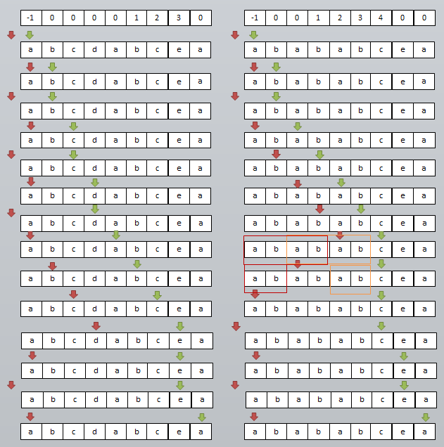

目录
反转字符串
整数反转
字符串中的第一个唯一字符
有效的字母异位词
验证回文串
字符串转换整数 (atoi)
实现 strStr()
外观数列
无重复字符的最长子串
反转字符串 题目描述 编写一个函数，其作用是将输入的字符串反转过来。输入字符串以字符数组 char[] 的形式给出。
不要给另外的数组分配额外的空间，你必须原地修改输入数组、使用 O(1) 的额外空间解决这一问题。
你可以假设数组中的所有字符都是 ASCII 码表中的可打印字符。
1 2 3 4 5 6 7 示例 1： 输入：["h","e","l","l","o"] 输出：["o","l","l","e","h"] 示例 2： 输入：["H","a","n","n","a","h"] 输出：["h","a","n","n","a","H"]
题解 双指针法 首位各一个指针，同时向中间移动，并交换每个元素。
1 2 3 4 5 6 7 8 9 class Solution : def reverseString (self, s: List[str]) -> None : h=0 t=len(s)-1 while h<=t: s[h], s[t] = s[t], s[h] h+=1 t-=1 return s
整数反转 题目描述 给你一个 32 位的有符号整数 x ，返回将 x 中的数字部分反转后的结果。
1 2 3 4 5 6 7 示例 1： 输入：x = 123 输出：321 示例 2： 输入：x = -123 输出：-321
题解 这道题一开始想的是把数字变成字符串，然后进行反转，再变成数字。但是这样对于最后的数字是否超过有效范围无法判断，因为假设环境不能存储64位整数，因此不能先得到反转后的数字，然后和$2^31-1$比较。所以就得在变换的过程中进行判断是否超出了有效范围。
这里用num保存当前数，初始num=0，然后每次取x的最后一位记为temp，然后x//10。然后令num = num x 10 + temp，最后x的所有位都处理完，x变为0，num就变为了反转之后的数。
1 2 3 4 5 6 7 8 9 10 11 12 13 class Solution : def reverse (self, x: int) -> int: num = 0 sign = 1 if x>=0 else -1 x = abs(x) while x!=0 : temp = x%10 x = x//10 if num<(2 **31 -1 -temp)/10 and num>-2 **31 /10 : num = num*10 + temp else : return 0 return num*sign
字符串中的第一个唯一字符 题目描述 给定一个字符串，找到它的第一个不重复的字符，并返回它的索引。如果不存在，则返回 -1。
示例
1 2 3 4 5 s = "leetcode" 返回 0 s = "loveleetcode" 返回 2
题解 该题使用哈希表解即可。key是每个字符，value对应字符的出现次数，如果是第一次出现，则字符value设为1，否则设为-1。最后根据原字符串查找第一个为1的字符，返回下标即可。
1 2 3 4 5 6 7 8 9 10 11 12 class Solution : def firstUniqChar (self, s: str) -> int: dic = {} for i in range(len(s)): if s[i] not in dic: dic[s[i]] = 1 else : dic[s[i]] = -1 for i,c in enumerate(s): if dic[c] == 1 : return i return -1
有效的字母异位词 题目描述 给定两个字符串 s 和 t ，编写一个函数来判断 t 是否是 s 的字母异位词。
示例
1 2 3 4 5 6 7 示例 1: 输入: s = "anagram", t = "nagaram" 输出: true 示例 2: 输入: s = "rat", t = "car" 输出: false
题解 哈希表法 对于第一个字符串，使用一个hashmap记录每个字符的次数。然后对于第二个字符串，遍历每个字符，对应字符的次数减1，如果出现哈希表中没有的字符或者最后哈希表中不全为0，则说明不是有效地字母异位次。如果最后哈希表中全为0，则说明两个字符串是有效的字母异位词。
排序比较法 对两个字符串进行排序，然后挨个比较每个字符是否相等，如果两个字符串是字母异位词，那么排序之后他们应该是相同的单词。
1 2 3 4 5 6 7 8 9 10 class Solution : def isAnagram (self, s: str, t: str) -> bool: if len(s)!=len(t): return False s = sorted(s) t = sorted(t) for i in range(len(s)): if s[i] != t[i]: return False return True
验证回文串 题目描述 给定一个字符串，验证它是否是回文串，只考虑字母和数字字符，可以忽略字母的大小写。
示例
1 2 3 4 5 6 7 示例 1: 输入: "A man, a plan, a canal: Panama" 输出: true 示例 2: 输入: "race a car" 输出: false
题解 双指针法 定义头指针i和尾指针j。由于只考虑字母和数字字符，因此指针遇到其他字符直接跳过即可。然后对于一个回文字符串，应该具有头指针与尾指针同时移动，所指向的元素始终保持相同。
1 2 3 4 5 6 7 8 9 10 11 12 13 14 15 16 class Solution : def isPalindrome (self, s: str) -> bool: i=0 j=len(s)-1 while (i<j): if not s[i].isalnum(): i+=1 elif not s[j].isalnum(): j-=1 else : if s[i].lower() != s[j].lower(): return False else : i += 1 j -= 1 return True
字符串转换整数 (atoi) 题目描述 请你来实现一个 myAtoi(string s) 函数，使其能将字符串转换成一个 32 位有符号整数（类似 C/C++ 中的 atoi 函数）。
函数 myAtoi(string s) 的算法如下：
读入字符串并丢弃无用的前导空格
检查下一个字符（假设还未到字符末尾）为正还是负号，读取该字符（如果有）。 确定最终结果是负数还是正数。 如果两者都不存在，则假定结果为正。
读入下一个字符，直到到达下一个非数字字符或到达输入的结尾。字符串的其余部分将被忽略。
将前面步骤读入的这些数字转换为整数（即，”123” -> 123， “0032” -> 32）。如果没有读入数字，则整数为 0 。必要时更改符号（从步骤 2 开始）。
如果整数数超过 32 位有符号整数范围 [$−2^31$, $2^31 − 1$] ，需要截断这个整数，使其保持在这个范围内。具体来说，小于 $−2^31$ 的整数应该被固定为 $−2^31$ ，大于 $2^31 − 1$ 的整数应该被固定为 $2^31 − 1$ 。
返回整数作为最终结果。
注意：
1 2 3 4 5 6 7 8 9 10 11 12 13 14 15 16 17 18 19 20 21 22 23 24 25 26 27 28 29 30 31 32 33 34 35 36 37 38 39 40 41 42 43 44 45 46 47 48 49 50 51 52 53 54 55 56 57 58 59 60 61 62 63 64 示例 1： 输入：s = "42" 输出：42 解释：加粗的字符串为已经读入的字符，插入符号是当前读取的字符。 第 1 步："42"（当前没有读入字符，因为没有前导空格） ^ 第 2 步："42"（当前没有读入字符，因为这里不存在 '-' 或者 '+'） ^ 第 3 步："42"（读入 "42"） ^ 解析得到整数 42 。 由于 "42" 在范围 [-2^31, 2^31 - 1] 内，最终结果为 42 。 示例 2： 输入：s = " -42" 输出：-42 解释： 第 1 步：" -42"（读入前导空格，但忽视掉） ^ 第 2 步：" -42"（读入 '-' 字符，所以结果应该是负数） ^ 第 3 步：" -42"（读入 "42"） ^ 解析得到整数 -42 。 由于 "-42" 在范围 [-2^31, 2^31 - 1] 内，最终结果为 -42 。 示例 3： 输入：s = "4193 with words" 输出：4193 解释： 第 1 步："4193 with words"（当前没有读入字符，因为没有前导空格） ^ 第 2 步："4193 with words"（当前没有读入字符，因为这里不存在 '-' 或者 '+'） ^ 第 3 步："4193 with words"（读入 "4193"；由于下一个字符不是一个数字，所以读入停止） ^ 解析得到整数 4193 。 由于 "4193" 在范围 [-2^31, 2^31 - 1] 内，最终结果为 4193 。 示例 4： 输入：s = "words and 987" 输出：0 解释： 第 1 步："words and 987"（当前没有读入字符，因为没有前导空格） ^ 第 2 步："words and 987"（当前没有读入字符，因为这里不存在 '-' 或者 '+'） ^ 第 3 步："words and 987"（由于当前字符 'w' 不是一个数字，所以读入停止） ^ 解析得到整数 0 ，因为没有读入任何数字。 由于 0 在范围 [-2^31, 2^31 - 1] 内，最终结果为 0 。 示例 5： 输入：s = "-91283472332" 输出：-2147483648 解释： 第 1 步："-91283472332"（当前没有读入字符，因为没有前导空格） ^ 第 2 步："-91283472332"（读入 '-' 字符，所以结果应该是负数） ^ 第 3 步："-91283472332"（读入 "91283472332"） ^ 解析得到整数 -91283472332 。 由于 -91283472332 小于范围 [-2^31, 2^31 - 1] 的下界，最终结果被截断为 -2^31 = -2147483648 。
题解 题目中已经给出了算法的步骤，按照步骤写即可。
1 2 3 4 5 6 7 8 9 10 11 12 13 14 15 16 17 18 19 20 21 22 23 24 25 26 27 28 29 30 31 32 class Solution : def myAtoi (self, s: str) -> int: if len(s) == 0 : return 0 sign = 1 num = 0 i = 0 while i<len(s) and s[i] == ' ' : i += 1 if i == len(s): return 0 if s[i] == '-' : sign = -1 i += 1 elif s[i] == '+' : sign = 1 i += 1 while i < len(s): if s[i].isnumeric(): if num <= (2 **31 -1 -int(s[i]))/10 : num = num * 10 + int(s[i]) else : return 2 **31 -1 if sign==1 else -2 **31 i += 1 else : break return num * sign
实现 strStr() 实现 strStr() 函数。
1 2 3 4 5 6 7 示例 1: 输入: haystack = "hello", needle = "ll" 输出: 2 示例 2: 输入: haystack = "aaaaa", needle = "bba" 输出: -1
题解 暴力解法 遍历haystack字符串，如果haystack中字符i与needle首字符相同，则比较i之后的几个字符与needle是否相同，如果相同，则找到了结果，返回位置i即可。如果不同，则继续遍历。如果最后还有没相同的字符串，则返回-1。
1 2 3 4 5 6 7 8 9 10 11 class Solution : def strStr (self, haystack: str, needle: str) -> int: i = 0 if len(needle) == 0 : return 0 while i < len(haystack): if haystack[i] == needle[0 ]: if haystack[i:i+len(needle)] == needle[0 :]: return i i += 1 return -1
这种方法比较暴力，时间复杂度为O(MN)，其中M，N分别为haystack和needle字符串的长度。
KMP算法 
那么接下来一个问题就是，如何求得这个nxt[]数组呢？这个问题就变成了如下问题：对于一个字符串s，求该字符串在前k位子串中的前缀与后缀公共部分的长度，分别保存在nxt[k]中。
假设在第k位失配，那么nxt[k]实际上就是[0,k-1]这个子串中，前缀和后缀的重合长度。
1 2 3 4 5 6 7 8 9 10 11 12 13 14 15 16 17 18 19 20 21 22 23 24 25 26 27 28 class Solution : def getNext (self, s) : nxt = [0 ]*len(s) i, j = 0 , -1 nxt[0 ] = -1 while i<len(s)-1 : if (j==-1 or s[i]==s[j]): i += 1 j += 1 nxt[i] = j else : j = nxt[j] return nxt def strStr (self, haystack: str, needle: str) -> int: i, j = 0 , 0 if len(needle) == 0 : return 0 nxt = self.getNext(needle) while i < len(haystack) and j < len(needle): if j==-1 or haystack[i] == needle[j]: i+=1 j+=1 else : j = nxt[j] if j>=len(needle): return i-j return -1
外观数列 题目描述 给定一个正整数 n ，输出外观数列的第 n 项。
示例
1 2 3 4 5 6 7 8 9 10 1. 1 2. 11 3. 21 4. 1211 5. 111221 第一项是数字 1 描述前一项，这个数是 1 即 “ 一 个 1 ”，记作 "11" 描述前一项，这个数是 11 即 “ 二 个 1 ” ，记作 "21" 描述前一项，这个数是 21 即 “ 一 个 2 + 一 个 1 ” ，记作 "1211" 描述前一项，这个数是 1211 即 “ 一 个 1 + 一 个 2 + 二 个 1 ” ，记作 "111221"
题解 要 描述 一个数字字符串，首先要将字符串分割为 最小 数量的组，每个组都由连续的最多 相同字符 组成。然后对于每个组，先描述字符的数量，然后描述字符，形成一个描述组 。要将描述转换为数字字符串，先将每组中的字符数量用数字替换，再将所有描述组连接起来。
1 2 3 4 5 6 7 8 9 10 11 12 13 14 15 16 17 18 19 20 class Solution : def countAndSay (self, n: int) -> str: num = "1" while n-1 >0 : i = 0 temp = num[i] count = 0 nextnum = "" while i < len(num): if num[i] == temp: count += 1 else : nextnum += "{}{}" .format(count, temp) temp = num[i] count = 1 i += 1 nextnum += "{}{}" .format(count, temp) num = nextnum n -= 1 return num
3 无重复字符的最长子串 题目描述 给定一个字符串，请你找出其中不含有重复字符的 最长子串 的长度。
示例
1 2 3 4 5 6 7 8 9 10 11 12 13 14 15 输入: s = "abcabcbb" 输出: 3 解释: 因为无重复字符的最长子串是 "abc"，所以其长度为 3。 输入: s = "bbbbb" 输出: 1 解释: 因为无重复字符的最长子串是 "b"，所以其长度为 1。 输入: s = "pwwkew" 输出: 3 解释: 因为无重复字符的最长子串是 "wke"，所以其长度为 3。 请注意，你的答案必须是 子串 的长度，"pwke" 是一个子序列，不是子串。 输入: s = "" 输出: 0
题解 初始解法 思考类似于求最长连续上升子序列，对于字符串的第i位，记录以该位为结尾的无重复最长子串的长度。这样整个字符串遍历完以后，就可以得到无重复子串最长的长度。
1 2 3 4 5 6 7 8 9 10 11 12 13 14 class Solution : def lengthOfLongestSubstring (self, s: str) -> int: maxlen = 0 dic = set() for i in range(0 , len(s)): dic.clear() dic.add(s[i]) for j in range(i-1 , -1 , -1 ): if s[j] not in dic: dic.add(s[j]) else : break maxlen = max(maxlen, len(dic)) return maxlen
滑动窗口 + 哈希 我们用两个指针l, h构成滑动窗口，同时使用一个hashmap来记录每个字符的位置。当h指针遇到重复的字符时，直接将l指针移动到之前见到的该重复字符的后一个位置（相当于缩小窗口）。同时在整个过程中，记录窗口的最大长度，就是无重复子串的最大长度。
1 2 3 4 5 6 7 8 9 10 11 12 13 14 15 16 class Solution : def lengthOfLongestSubstring (self, s: str) -> int: l, h = 0 , 0 hashmap = {} maxlen = 0 while h<len(s): if s[h] not in hashmap: hashmap[s[h]] = h else : if hashmap[s[h]] >= l: l = hashmap[s[h]]+1 hashmap[s[h]] = h maxlen = max(maxlen, h-l+1 ) h += 1 return maxlen